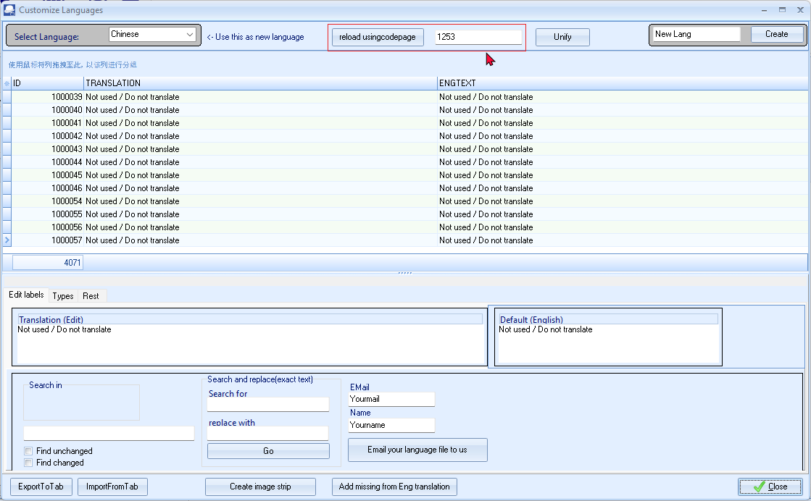
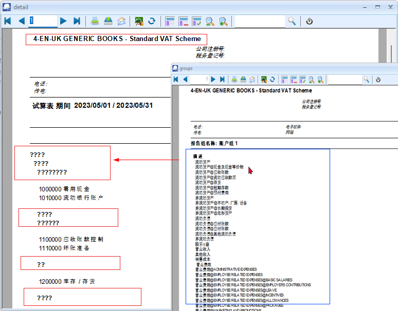

Accounting in China
Is the IFRS for UK applicable to China?
No, the IFRS for the UK is not applicable to China.
China has its own set of accounting standards known as the Chinese Accounting Standards (CAS).
China - China is included in the IFAD GAAP Convergence Studies. - Accounting standard setter: China Accounting Standards Committee (CASC) ...
While there is some convergence between CAS and IFRS, CAS is the primary set of standards used by Chinese companies.
www.ptl-group.com
Chinese Accounting Standards (CAS)
See - https://www.ptl-group.com/guides/accounting-in-china/ -
See - https://www.ptl-group.com/guides/taxes-paid-by-employers/ -
IFRS Resources
See - https://www.ifrs.org/use-around-the-world/use-of-ifrs-standards-by-jurisdiction/ -
See - IFRS Jurisdiction Profile : China
https://www.ifrs.org/content/dam/ifrs/publications/jurisdictions/pdf-profiles/china-ifrs-profile.pdf
Does China apply IFRS for all companies?
No, China does not apply IFRS for all companies, but some Chinese companies do use IFRS for financial reporting to investors outside of China.
Explanation
- Chinese Accounting Standards (ASBEs)
China's national accounting standards, which are substantially similar to IFRS. All companies listed in China must use ASBEs to prepare financial statements.
IFRS
The International Financial Reporting Standards, which are issued by the IASB.
Hong Kong Financial Reporting Standards (HKFRS)
The financial reporting standards used in Hong Kong.
Dual listings
Chinese companies that are listed in both China and other international markets may produce IFRS-compliant financial statements.
Why the difference?
- China's accounting rules are different from IFRS in terms of practical implementation and interpretation.
- IFRS is modelled on developed economies, and it's not clear how it will affect large transitional economies like China.
See - IFRS adoption in China and foreign institutional investments -
What accounting standards are adopted in China?
China has its own accounting rules referred to as the Chinese Accounting Standards (CAS). Despite substantial convergence between CAS and the International Financial Reporting Standards (IFRS) that most Western investors are used to, practical implementation and interpretation differences remain.
The CAS framework is based on two standards:
- Accounting Standards for Business Enterprises (ASBEs); and
- Accounting Standards for Small Business Enterprises (ASSBEs).
The ASBE standards are significantly converged with the International Financial Reporting Standards (IFRS) and all listed companies in China must comply with the ASBEs for the preparation of their financial statements. Most foreign-invested entities also generally follow the ASBEs.
The ASSBEs are a counterpart of the ASBEs, providing unified standards for small-size enterprises. The ASSBEs use the ASBEs as a reference but are more similar to tax laws in terms of their tax calculation methods, which simplify the process of making adjustments between accounting standards and tax rules. Small-scale enterprises can choose to adopt either the ASBEs or ASSBEs.
Language and currency for reporting
RMB is the base currency for ledgers and financial reports. For enterprises using currencies other than RMB in their business transactions, foreign currencies can be used as the functional currency; however, financial reports are required to be presented in RMB. Furthermore, accounting records must be maintained in Chinese. FIEs can choose to use only Chinese or a combination of Chinese and a foreign language.
Chart of Accounts
Is there sample chart of accounts for Accounting Standards for Small Business Enterprises (ASSBEs)?
While there isn't a single, universal sample chart of accounts specifically tailored to ASSBEs, here's a basic framework you can adapt based on your business's specific needs and the applicable ASSBE requirements:
Assets:
- Cash: Bank accounts, petty cash
- Accounts Receivable: Money owed by customers
- Inventory: Goods held for sale
- Prepaid Expenses: Expenses paid in advance (e.g., insurance, rent)
- Fixed Assets: Property, plant, and equipment (less accumulated depreciation)
Liabilities:
- Accounts Payable: Money owed to suppliers
- Short-Term Loans Payable: Loans due within a year
- Long-Term Loans Payable: Loans due beyond a year
- Accrued Expenses: Expenses incurred but not yet paid
Equity:
- Owner's Capital: Initial investment and additional contributions
- Retained Earnings: Accumulated profits less dividends
Revenue:
- Sales Revenue: Income from sales of goods or services
- Other Income: Interest, rental income, etc.
Expenses:
- Cost of Goods Sold: Direct costs of producing goods sold
- Selling Expenses: Costs related to marketing and sales
- General and Administrative Expenses: Overhead costs (e.g., rent, utilities, salaries)
Remember:
- Tailor to Your Business: Adjust the chart to match your specific operations and industry.
- Consider ASSBE Requirements: Ensure your chart aligns with the specific requirements and disclosures outlined in the ASSBEs.
- Use a Chart of Accounts Software: Consider using accounting software to automate the process and ensure accuracy.
Where to Find More Information:
- Accounting Software Providers: Many accounting software programs come with pre-built chart of accounts templates that you can customize.
- Consult with an Accountant: An accountant can provide tailored advice and help you create a chart of accounts that meets your specific needs and complies with ASSBEs.
By carefully considering these factors, you can create a comprehensive and effective chart of accounts for your small business under the ASSBEs framework.
Is there sample chart of accounts for Accounting Standards for Business Enterprises (ASBEs)?
While there isn't a single, universal sample chart of accounts specifically tailored to ASBEs, here's a basic framework you can adapt based on your business's specific needs and the applicable ASBE requirements:
Assets:
- Cash: Bank accounts, petty cash
- Accounts Receivable: Money owed by customers
- Inventory: Goods held for sale
- Prepaid Expenses: Expenses paid in advance (e.g., insurance, rent)
- Fixed Assets: Property, plant, and equipment (less accumulated depreciation)
Liabilities:
- Accounts Payable: Money owed to suppliers
- Short-Term Loans Payable: Loans due within a year
- Long-Term Loans Payable: Loans due beyond a year
- Accrued Expenses: Expenses incurred but not yet paid
Equity:
- Owner's Capital: Initial investment and additional contributions
- Retained Earnings: Accumulated profits less dividends
Revenue:
- Sales Revenue: Income from sales of goods or services
- Other Income: Interest, rental income, etc.
Expenses:
- Cost of Goods Sold: Direct costs of producing goods sold
- Selling Expenses: Costs related to marketing and sales
- General and Administrative Expenses: Overhead costs (e.g., rent, utilities, salaries)
Remember:
- Tailor to Your Business: Adjust the chart to match your specific operations and industry.
- Consider ASBE Requirements: Ensure your chart aligns with the specific requirements and disclosures outlined in the ASBEs.
- Use a Chart of Accounts Software: Consider using accounting software to automate the process and ensure accuracy.
Where to Find More Information:
- Accounting Software Providers: Many accounting software programs come with pre-built chart of accounts templates that you can customize.
- Consult with an Accountant: An accountant can provide tailored advice and help you create a chart of accounts that meets your specific needs and complies with ASBEs.
By carefully considering these factors, you can create a comprehensive and effective chart of accounts for your business under the ASBEs framework.
Chinese 4-CAS-GENERIC Set of Books Debug
Good job - Need to look at the following:
Inno Install script for Chinese
Currently we have the following languages to install TurboCASH5
Folders that contain the tcash.ini files:
chs- Chinese simplified
cht - Chinese traditional
Innoscript language files:
ChineseSimp.isl
ChineseTrad.isl
Important to select the correct language folder and innoScript language files which is inline with the Chinese.dfm language file. Should it be Chinese simplified or Chinese traditional.
Language : Chinese.dfm - Codepage setting
Language : Chinese.dfm - Codepage - Tools -> Customize Language
The default codepage is 1253

What is codepage 1253 and is it applicable to the China?
Codepage 1253 is specifically designed for the Greek language.1 It's a character encoding standard used to represent text in the modern Greek alphabet, including accented letters, punctuation marks, and special symbols.2
It is not applicable to the Chinese language. Chinese languages (Simplified and Traditional) require different code pages, such as GB2312, GBK, GB18030 (for Simplified Chinese) and Big5, CNS 11643 (for Traditional Chinese).
Key Points:
- Codepage 1253: For modern Greek.3
- Chinese Languages: Use different code pages like GB2312, GBK, GB18030, Big5, and CNS 11643.
- Unicode: The preferred standard for modern systems, supporting all languages, including Chinese and Greek.
I hope this clarifies the distinction!
- https://learn.microsoft.com/en-us/windows/win32/intl/code-page-identifiers -
What is the Codepages for Chinese languages?
The most common code pages for Chinese languages are:
- Simplified Chinese:
- GB2312: A national standard for mainland China, covering a subset of simplified Chinese characters.
- GBK: An extension of GB2312, supporting a larger set of characters.
- GB18030: A more recent standard that includes a wider range of characters, including those used in minority languages in China.
- Traditional Chinese:
- Big5: A widely used encoding for traditional Chinese, primarily in Taiwan and Hong Kong.
- CNS 11643: A national standard for Taiwan, supporting a comprehensive set of traditional Chinese characters.
It's important to note that:
- Unicode: The preferred encoding for modern systems is Unicode (specifically UTF-8), which supports all languages and scripts.
- Code pages are often legacy encodings. While they may still be used in some older systems, Unicode is generally the recommended standard for new applications and data exchange.
Display of Chinese characters on screens, forms / reports
Print Setup -> Groups and Ledger analyser 1/2
Print button in Print Setup -> Groups seems to print correctChinese characters, but in the Ledger analyser 1/2 it prints the characters with question marks ????

On the Accounts, Groups, etc. forms seems to display in the Chinese characters correctly.
Setup menu
Setup -> Company Info
Name of Set of Books refers to "4-EN-UK GENERIC BOOKS - Standard VAT Scheme"
Setup -> Reporting dates
Reporting dates refer to January - to December - may need to be translated.
Chart of accounts
VAT GST/Sales tax in China
Currently the VAT in the Chart of Accounts is based on the UK VAT - Standards= cgeme reflecting tax percentages of 20%, etc.
The correct term for the sales tax in China is Value Added Tax (VAT).1
See - https://taxsummaries.pwc.com/quick-charts/value-added-tax-vat-rates -
China has a multi-tiered VAT system with different rates:2
See - https://wise.com/gb/vat/china -
- Standard Rate: 13% (applies to most goods and services)3
See - https://wise.com/gb/vat/china -
- Reduced Rates: 9% and 6% (for specific goods and services like certain agricultural products, transportation, and some services)
Note: The specific VAT rates and their applicability can change, so it's essential to refer to the latest official information from the Chinese tax authorities for the most accurate and up-to-date details.
Organizing payroll accounts in China
Here's a possible structure for organizing payroll accounts in China, keeping in mind that specific requirements might vary:
I. Expense Accounts
- 501000 Salaries Expense
- 501010 Basic Salary
- 501020 Overtime Pay
- 501030 Bonuses
- 501040 Allowances (e.g., housing, transportation)
- 502000 Payroll Taxes Expense
- 502010 Pension Insurance - Employer Portion
- 502020 Medical Insurance - Employer Portion
- 502030 Unemployment Insurance - Employer Portion
- 502040 Work Injury Insurance - Employer Portion
- 502050 Maternity Insurance - Employer Portion
- 502060 Housing Fund - Employer Portion
- 503000 Employee Benefits Expense
- 503010 Medical Insurance - Employee Portion
- 503020 Housing Fund - Employee Portion
- 503030 Other Employee Benefits (e.g., life insurance, meal subsidies)
II. Balance Sheet Accounts
- 211000 Accrued Salaries Payable
- 212000 Payroll Taxes Payable
- 212010 Pension Insurance Payable
- 212020 Medical Insurance Payable
- 212030 Unemployment Insurance Payable
- 212040 Work Injury Insurance Payable
- 212050 Maternity Insurance Payable
- 212060 Housing Fund Payable
- 213000 Withholding Taxes Payable
Key Considerations:
- Chart of Accounts Design: This structure provides a basic framework. You should adapt it to your specific needs and the level of detail required for your accounting system.
- Coding System: Implement a consistent coding system (e.g., alphanumeric) for easy identification and reporting.
- Internal Controls: Establish strong internal controls to ensure accuracy and prevent fraud in payroll processing. See - What is Payroll Fraud? -
- Regular Reviews: Regularly review and update your payroll account structure to reflect changes in regulations and business requirements.
Disclaimer: This information is for general guidance only and should not be considered professional accounting advice.
It is strongly recommended consulting with a qualified accounting professional or tax advisor in China for specific guidance on payroll accounting and tax requirements. They can help you design a Chart of Accounts that meets your specific needs and complies with all applicable regulations.